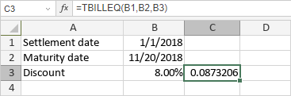

TBILLEQ Funkcija
TBILLEQ funkcija je jedna od finansijskih funkcija. Koristi se za izračunavanje prinosa ekvivalentnog obveznici Trezorskog zapisa.
Sintaksa
TBILLEQ(settlement, maturity, discount)
TBILLEQ funkcija ima sledeće argumente:
| Argument | Opis |
|---|---|
| settlement | Datum kada je Trezorski zapis kupljen. |
| maturity | Datum dospeća Trezorskog zapisa. Ovaj datum mora biti unutar jedne godine od datuma kupovine. |
| discount | Stopa diskonta Trezorskog zapisa. |
Napomene
Datumi moraju biti uneseni koristeći DATE funkciju.
Kako primeniti TBILLEQ funkciju.
Primeri
Slika ispod prikazuje rezultat koji vraća TBILLEQ funkcija.
